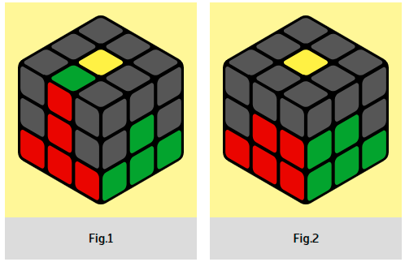

Pay special attention to the colors. For example, let's take a green-red edge.
We bring it and place it with the red color to the red center and hold the cube with the red
color towards us (Fig. 1). We do U RU R' U' ➪ L' U' LU
➪ which means interception of the cube to the right. In our case, the green center will be in
front of us. In words, the formula will sound like this: right bang-bang, interception to the
right, left bang-bang.
|  |
The edge goes to the right
|